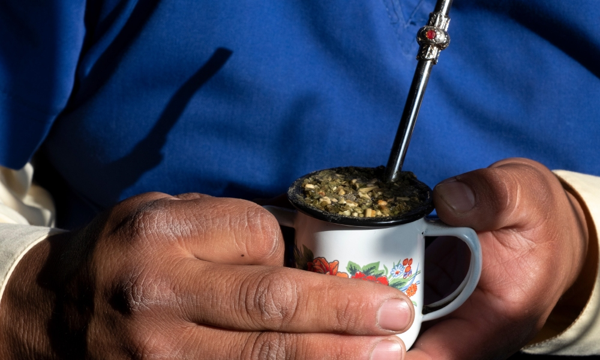
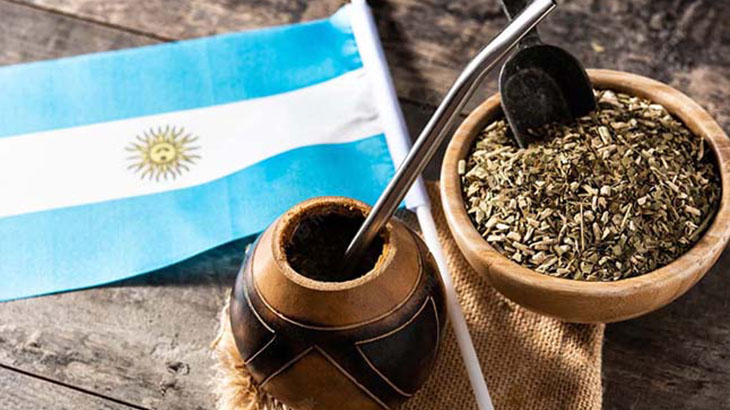

Mate Argentin
Un peu d'histoire
Le maté (en guarani, ka'ay) est une infusion à base de feuilles de yerba mate (Ilex paraguariensis), plante originaire des bassins des fleuves Paraguay et Paraná, en Amérique du Sud. La yerba mate est composée de feuilles séchées, coupés et moulus, qui ont un goût amer en raison des tanins qu'ils contiennent. Pour cette raison, certains aiment sucrer un peu le maté avec du sucre, de la stévia ou un édulcorant non calorique, mais il est généralement consommé amer. La mousse générée lors de "l'amorçage" est due aux glycosides que contient le yerba mate. Il est consommé en Amérique depuis l'époque préhispanique par certains groupes ethniques d'origine tupi-guaraní, comme les Avá, les Mbyá et les Kaiowa, et aussi, dans une moindre mesure, par d'autres groupes ethniques qui commerçaient avec eux, comme comme les ñandevá, les Taluhets (anciennes pampas) et les qom (tobas). Il fut rapidement adopté par les colonisateurs espagnols et resta partie du patrimoine culturel principalement en Argentine, au Paraguay, en Uruguay, dans le sud et l'est de la Bolivie, dans le sud du Brésil et au Chili, notamment dans le centre et le sud du pays (entre Santiago et Magallanes). À son tour, il est normalement consommé en Syrie (le plus grand importateur de yerba mate au monde grâce aux migrants syriens en Argentine qui ont amené le produit dans leur pays d'origine) et au Liban.
Comme le thé, le café ou le chocolat, il a un effet stimulant grâce à la caféine qu'il contient.56 Auparavant et populairement, on pensait qu'il avait un énergisant similaire mais pas le même, appelé « mateine ». De plus, s'ajoute un effet diurétique, qui est compensé par la forte consommation d'eau qui se produit lors du "matea", résultant ainsi en une infusion digestive, purifiante et - comme elle contient des antioxydants - préservant l'organisme. Comme les autres infusions mentionnées, le maté a une certaine acidité, c'est pourquoi d'autres herbes (digestives, régulatrices de la fonction hépatique, sédatives, etc.) sont souvent ajoutées - en petites proportions - qui parviennent à neutraliser l'acidité ainsi qu'à compenser la légère acidité. effet stimulant de la caféine. Traditionnellement, on le boit chaud à travers un sorbet appelé tumba placé dans un petit récipient, appelé - selon les régions - "mate", "cuia", "porongo" ou "guampa", qui contient l'infusion.
À l'époque impériale, le maté était largement répandu parmi toute la population de la vice-royauté du Río de la Plata, quelle que soit son origine : indigènes, esclaves africains, créoles, espagnols ou un mélange de ces éléments. Dans tous les foyers, pauvres ou riches, on l'utilisait comme boisson rafraîchissante, on prenait le petit-déjeuner avec le maté tous les matins et on prenait une collation avec le maté chaque après-midi, accompagné de pain, de gâteaux rôtis ou de "tortillas" (grillées), etc. Pour les moins fortunés, cela pouvait représenter un dîner, mais pour les plus aisés, c'était une bonne excuse pour recevoir des invités et les divertir pendant qu'une Chinoise les nourrissait. Les compagnons (récipient) peuvent être faits de porongo ou de courge, de bois, d'or, d'argent, d'étain ou d'argile avec différentes formes et gaufrages artistiques. La consommation de maté est répandue dans tout le pays et sa consommation est quotidienne. Et ce, de toutes les couches sociales. Une étude de l'Institut Yerba Mate montre que l'infusion est présente à 98% dans les foyers du pays. En 2013, on estimait que la consommation annuelle de maté par les Argentins était de 240 000 tonnes de yerba maté, soit environ 100 litres par habitant. Environ 6,4 kilos de yerba maté sont consommés par habitant en Argentine (seulement derrière l'Uruguay, qui a une consommation par habitant de 8 kilos par an), ce qui donne une centaine de litres de la boisson la plus populaire du pays, selon les données de. l'Institut National Yerba Mate (INYM) à partir de 2016.

Famille partageant un Mate

Tolê Mate
